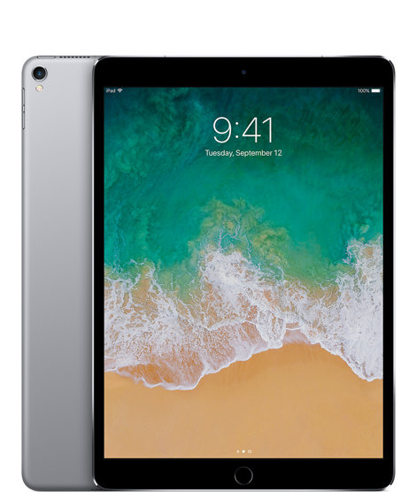

iPad stond altijd al bekend om zijn baanbrekende Multi-Touch-functionaliteit. Het vernieuwde Retinadisplay op de iPad Pro zet opnieuw de toon. Het is helderder, reflecteert minder en met ProMotiontechnologie reageert het ongekend snel.
Prijs: 10,5-inch display vanaf €739,- Prijs: 12,9-inch display vanaf €909,-
Een megasprong voor iPad

Met iOS 11 komt iPad nog meer tot leven.
Dankzij nieuwe features en mogelijk heden krijg je makkelijker meer voor elkaar. Alles werkt ongekend snel, prettig en persoonlijk.
App Switcher
Bijvoorbeeld met de vernieuwde App Switcher. met de vernieuwde App Switcher gaat switchen tussen apps zo snel als een swipe. Hij onthoudt ook welke app-combinaties je eerder hebt gebruikt om mee te multitasken.

Apple Pencil
Dankzij de hogere refresh-rate van het nieuwe display van iPad Pro voelt Apple Pencil nog directer en natuurlijker aan. Met geen enkel ander digitaal instrument kun je zo nauwkeurig schrijven, annoteren en tekenen.